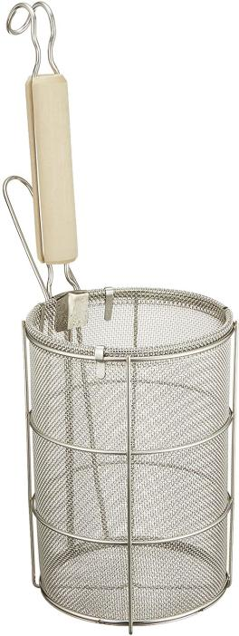
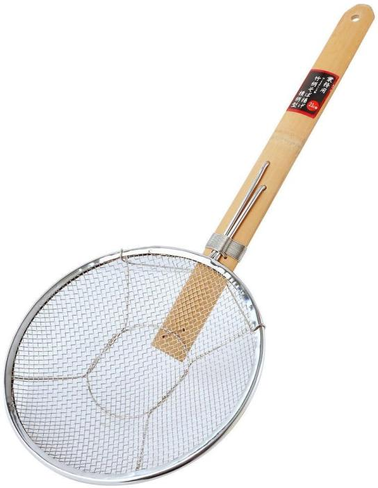
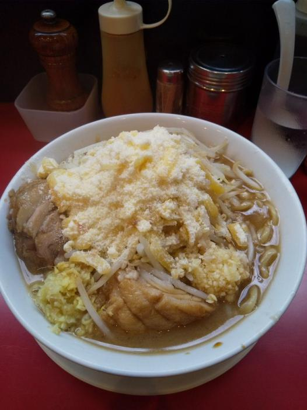
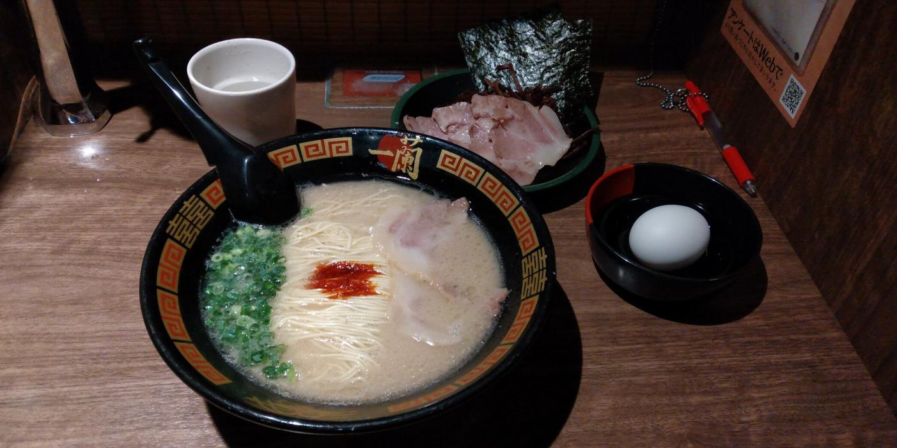
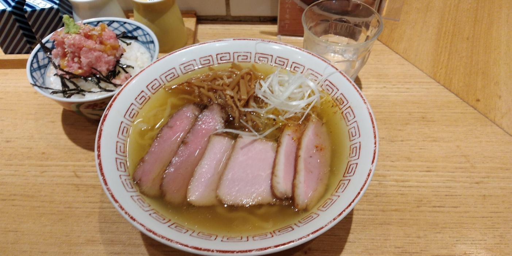
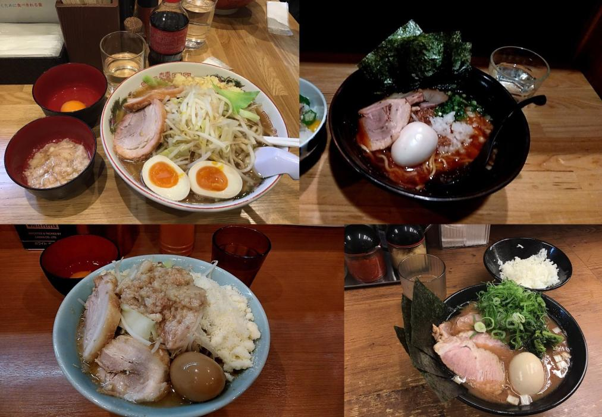
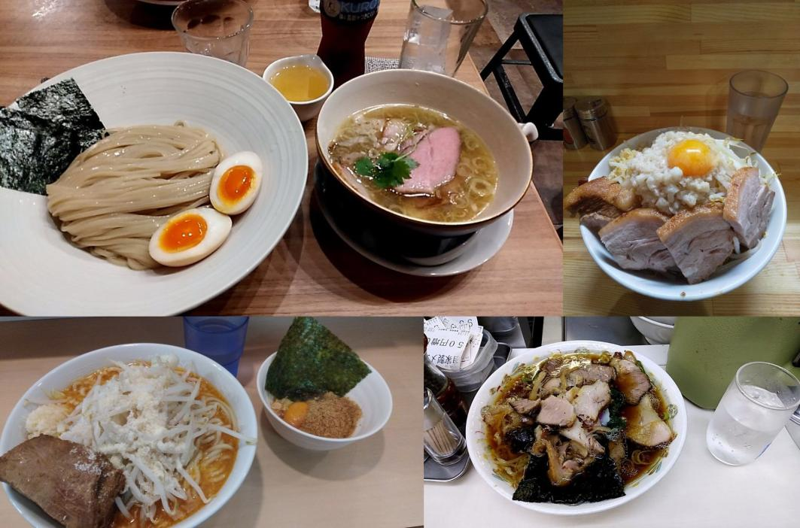

こんにちは、2回生P班のAshiheartです。 5日目のアドベントカレンダーでは、普段僕がラーメン屋を探すときの手順と、おすすめの店舗を紹介しようと思います。 大学生になるとラーメンに行く頻度が激増すると思います。 そんな皆さんのラーメン健康生活がより充実したものになれば幸いです。
じゃ、漏れのとっておき麺イッゾ！🍜🍜🍜
本題へ入る前に、簡単だけど少し踏み込んだラーメンの見分け方を紹介したいと思います。
麺の湯切りをしている動画を見たことがあるでしょうか。 一般的に麺を茹で上げるときはテボか平ざるのどちらかを使います。
テボは使うのに難しい要素が無く、タイマーを使えば誰でも正確に茹でることができます。そのため、店の展開が速いチェーン店で使われることが特に多いです。 ただし、テボの中は狭く麺が傷ついたり茹でムラができやすいため、高いクオリティを目指すなら平ざるに劣ります。
一方で平ざるは使いこなすのに数年単位の修行が必要だと言われています。数人分の麺が入ってる大釜の中から正確に一人分の麺量を掬いだすこと、こぼれないように丁寧に湯切りするのは一朝一夕には出来ません。しかし、大釜を広く泳いで茹でられた麺はムラが少なくなります。
個人的な意見になりますが、平ざるを使いこなしているラーメン屋はそれだけで期待できます。ただし、テボを使う店も決して悪いということはありません。
テボ(出典:Amazon)
平ざる(出典:Amazon)
乳化とは水と油が均一に混ざりあった状態のことで、白く濁っているのが特徴です。家系や博多ラーメンのような豚骨ラーメンが濁ったスープなのはこのためです。 (ただし、家系ラーメンは追加で油を入れるため表面は透明に見えます。)
乳化しているほどまろやかなスープになり、油の分だけ甘味が増します。 一方で非乳化スープは醤油がキリッと立っていて、あっさりした印象があります。そもそも非乳化スープは油をあまり含んでいないことが多いですね。
ただ、確かに最近の豚骨ラーメンの多くは乳化したスープが多いのですが、二郎(系,インスパイア)では店舗によって乳化度合いがかなり異なります。 食べに行く前に食べログ等のサイトで写真を確認してみてください。色だけで判別できるのでそんなに難しくないと思います。
乳化度はそこそこ好みが分かれる所ではないでしょうか。
個人的には乳化スープの方が好きです。非乳化の二郎は化学調味料感満載の味がして怖いので
ラーメン二郎三田本店の非乳化スープ
ラーメン用心棒・神保町店のド乳化スープ
製麺をするときに含ませる水分の割合のことです。 この加水率次第で、湯で時間や食感が大きく異なります。
加水率が低いとボソボソ(ボキボキ?)食感になり、小麦の風味を強く楽しめるのが特徴です。低加水になるほど、麺が伸びやすくなるため細麺が多い印象があります。すでにイメージされている方もいると思いますが、まさに博多ラーメンが低加水麺です。
一方で多加水な麺は、モチモチ食感で麺が伸びづらいです。 麺の太さはまちまちですが、超多加水な麺では太麺が多い気がします(個人の感想)。 有名なジャンルでは喜多方ラーメンが多加水です、究極的にはうどんが当てはまりますね(笑)
加水率は麺の触感を決める重要な部分なので、店のこだわりが現れるところだと思います。店舗の説明や口コミで加水率の記述があったら是非参考にしてみてください。
一蘭は高いけどやっぱり美味い！こちらも低加水
超多加水自家製手揉み麺を提供する、神保町の喜多方食堂
自分は時間に余裕があるときは以下のページでラーメン屋を探しています。
関東のラーメン屋は競争率が高いので、超有名店じゃなくてもやはり美味いラーメンは多いですね。そこそこ店を展開していておすすめの店舗を紹介します。
津田沼が最寄りのラーメン屋は既に知っている人が多いと思うので、少し離れた店も見ていただけたらと思います。
ソフメ部員は秋葉に向かう頻度も高いと思うので併せて紹介したいと思います。
かなり東京よりのラーメン紹介になってしまいましたが、以上で終わります。 僕のラーメンのレビューは無視して気になったところは是非行ってみてください。 ラーメンはどんなに贅沢しようとしても大体2000円以内に収まるので、本当に大学生の味方ですよね。ソフトメディア研究会でもラーメン好きが多いので、話題に困らないのは本当に助かっています。
コロナが収束してサークル活動も戻って、また部会終わりにTwitterのTLがラーメンの画像で埋め尽くされる光景が待ち遠しいです。僕も「オッケーらーめん」と一言くれたら即同行します。
6日目はmasuda君の「ぷよぷよにおける弥生手順」ですね。僕はGTRしか組めない初心者なので記事を見て勉強したいと思います。